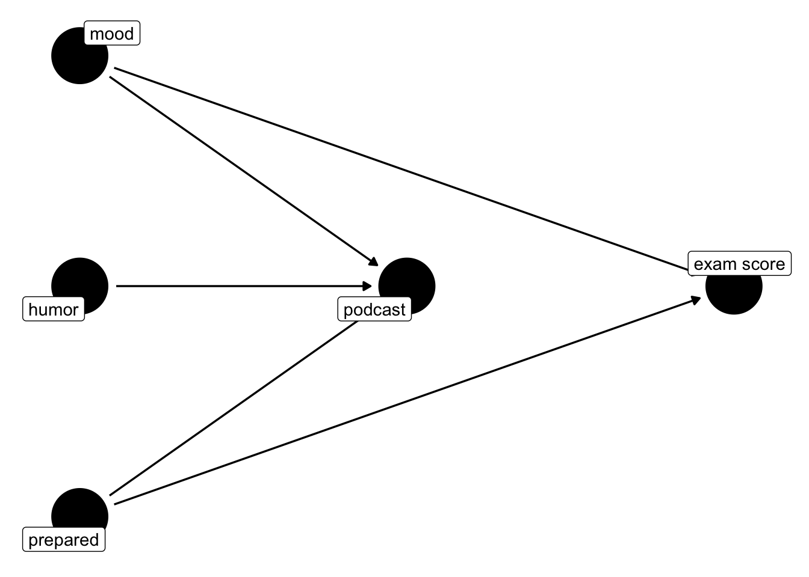

This week we will start talking about Causal Inference in R. You will have already seen the theoretical and mathematical parts with Brenda in the lecture. This script is supposed to initiate you to the practical part of Causal Inference.
This session will show you how to :
Visualize causality in R
Prepare data for Causal Inference
Perform a simple Diff-in-Diff analysis in R
Interpret the results of a Diff-in-Diff analysis in R
library(ggdag)
Attaching package: 'ggdag'
The following object is masked from 'package:stats':
filter
podcast_dag <-dagify( podcast ~ mood + humor + prepared, exam ~ mood + prepared,coords =time_ordered_coords(list(# time point 1c("prepared", "humor", "mood"),# time point 2"podcast",# time point 3"exam" ) ),exposure ="podcast",outcome ="exam",labels =c(podcast ="podcast",exam ="exam score",mood ="mood",humor ="humor",prepared ="prepared" ))ggdag(podcast_dag, use_labels ="label", text =FALSE) +theme_dag()

Visualize causality in R
The first step in any causal inference analysis is to visualize the causal graph. This is a graphical representation of the relationships between the variables in the analysis.
Showing causality graphically and the fact that it only runs in one direction have not always been the case in the history of statistics. As a matter of fact, it took us a long time to figure out what causality even really is and then another time to figure out how to display this in some way [@pearl_book_2018]. One of Judea Pearl’s biggest contributions was that of graphical models for causality in form of Directed Acyclic Graphs which we will henceforth call DAG(s) [@pearl_causal_1995].
Version 2.0.0 of `modelsummary`, to be released soon, will introduce a
breaking change: The default table-drawing package will be `tinytable`
instead of `kableExtra`. All currently supported table-drawing packages
will continue to be supported for the foreseeable future, including
`kableExtra`, `gt`, `huxtable`, `flextable, and `DT`.
You can always call the `config_modelsummary()` function to change the
default table-drawing package in persistent fashion. To try `tinytable`
now:
config_modelsummary(factory_default = 'tinytable')
To set the default back to `kableExtra`:
config_modelsummary(factory_default = 'kableExtra')
── Conflicts ────────────────────────────────────────── tidyverse_conflicts() ──
✖ readr::col_factor() masks scales::col_factor()
✖ purrr::discard() masks scales::discard()
✖ dplyr::filter() masks ggdag::filter(), stats::filter()
✖ dplyr::lag() masks stats::lag()
ℹ Use the conflicted package (<http://conflicted.r-lib.org/>) to force all conflicts to become errors
For the first example on Diff-in-Diff I am going to use the code written by the brilliant Rohan Alexander who has written the probably best introductio to Data Analysis in R which you can finde here. Furthermore, the example he uses is a paper written by Charles Angelucci and Julia Cagé who you probably know already.
The paper is called “Newspapers in Times of Low Advertising Revenues” [@angelucci_newspapers_2019] and follows a difference-in-difference analysis and it also comes with replication material which means that we can try to emulate their results.
In 1967, the French government introduced advertisements on French TV programs. This led to a decrease in advertising revenues for newspapers all over France. The idea is therefore to understand if and how the introduction of ads on TV affected the ad revenues for newspapers, both local and national ones, in France. They use a difference-in-difference approach to estimate the effect of the introduction of advertising on the advertising revenues of newspapers. Thus, the treatment is…? Exactly, the introduction of ads on TV. Angelucci and Cagé argue that national newspapers were more affected by this change than local newspapers. They have many more hypotheses which they test in this paper, but for now we will focus on this one. As mentioned above, their data is available and we can use it to replicate their results. You need to sign up, to get it.
Next we will have to do some minor data management. Fortunately enough, this replication material is already pretty clean and we do not have to mutate() or filter() our way around too much. The only thing we actually have to do, is to convert some variables into factors and to create a new variable which is the ratio of advertising revenue over circulation. Here I specify the argument across() again of the mutate() function and within it, I give a vector c() containing all the variables that should be transformed to factors.
Here is a brief explanation of the variables in the dataset:
year: The year of the observation
id_news: A unique identifier for each newspaper
local: A binary indicator (0 or 1) representing whether a newspaper is local or national (1 = local, 0 = national)
national: A binary indicator (0 or 1) representing whether a newspaper is national or local (1 = national, 0 = local)
ra_cst: The advertising revenue of the newspaper (in constant (2014) euros)
ps_cst: The price of subscriptions for the newspaper. This variable measures how much the newspaper charges for its subscriptions, reflecting its pricing strategy and revenue from readers
qtotal: The circulation of the newspaper. This variable measures the number of copies sold, reflecting the newspaper’s readership and revenue from readers
after_national: A binary indicator (0 or 1) representing the interaction between a newspaper’s national status and the post-television advertising era. Specifically, it marks the period after a newspaper has started national circulation and also corresponds to times after the introduction or significant increase of television advertising. This variable is designed to capture the combined effects of a newspaper reaching a national audience and the competitive or complementary impacts of television advertising on newspaper revenues or strategies
ra_cst_div_qtotal: A derived variable representing the advertising revenue per unit of circulation (ra_cst / qtotal). This variable is calculated to assess the efficiency or effectiveness of advertising revenue in relation to the newspaper’s circulation size
This here is the regression formula for the DiD analysis, including the interaction term in which we specify the treatment. The treatment is the introduction of ads on TV and the interaction term is the product of the treatment and the national status of the newspaper
\[
\ln(\mathrm{ra\_cst}) = \beta_0 + \beta_1 \mathrm{national} + \beta_2 \mathrm{after\_national} + \beta_3(\mathrm{national} \times \mathrm{after\_national}) + \beta_4 \mathrm{year} + \alpha_i + \epsilon
\] - ln(ra_cst): The natural logarithm of advertising revenue for a newspaper. Log transformation is often used in economic data to help normalize the distribution of skewed variables and to interpret the coefficients in terms of percentage changes
national: This is a dummy variable indicating whether a newspaper is national (1) or local (0). This variable distinguishes the treatment group from the control group.
afternational: A dummy variable indicating the time period after the introduction of television advertising in 1967 (1 for years 1967 and later, 0 for earlier years). It captures the before-and-after comparison.
national*after_national: The interaction term between national and after_national. This term is crucial for DiD analysis as it estimates the differential effect of the introduction of television advertising on national newspapers compared to local newspapers over time
year: A continuous variable representing the year of observation. Including this allows controlling for linear time trends that affect all newspapers
alpha: Newspaper fixed effects that control for all unobserved, time-invariant differences between newspapers
epsilon: The error term
This is the code to specify exactly this. Note that in R national * after_national includes three variables due to the * operator. It specifies the main effect of national, the main effect of after_nationaland the interaction effect national:after_national, representing the differential impact of the post-television advertising period specifically on national newspapers relative to local ones. If we had only put in national:after_national, we would have only included the interaction term and would have had to add the main effects manually. This means that the formula log(ra_cst) ~ national*after_national + ... is shorthand for log(ra_cst) ~ national + after_national + national:after_national + ....
newspaper_did_model <-lm(log(ra_cst) ~ national * after_national + year + id_news,data = newspapers)
modelsummary(newspaper_did_model,title ="Difference-in-Differences Model Summary",# omit the fixed effectscoef_omit ="id_news\\d+",estimate ="{estimate} ({std.error})",stars =TRUE)
Difference-in-Differences Model Summary
(1)
(Intercept)
−72.099 (2.896)
(2.896)
national1
−1.039 (0.078)
(0.078)
after_national1
−0.229 (0.031)
(0.031)
year
0.046 (0.001)
(0.001)
Num.Obs.
1052
R2
0.985
R2 Adj.
0.984
AIC
36167.6
BIC
36574.2
Log.Lik.
345.341
RMSE
0.17
+ p < 0.1, * p < 0.05, ** p < 0.01, *** p < 0.001
The intercept we can disregard in this case. As a reminder, it is when all IVs are set to 0. It does not really make sense in our case, especially due to the year variable.
national1 is equal to -1.039. For national newspapers, the log of advertising revenue is, on average, 1.039 units lower than that of local newspapers, holding other factors constant. This effect is statistically significant given the small standard error (0.078), indicating a consistent difference between national and local newspapers in terms of advertising revenue. The coefficient for the period after the introduction of national television advertising (after_national1) is of -0.001 and thus suggests a negligible and statistically insignificant decrease in the log of advertising revenue across all newspapers, with a standard error of 0.022. This implies that the mere passage of time after the introduction of television advertising has no significant overall effect on newspaper advertising revenue.